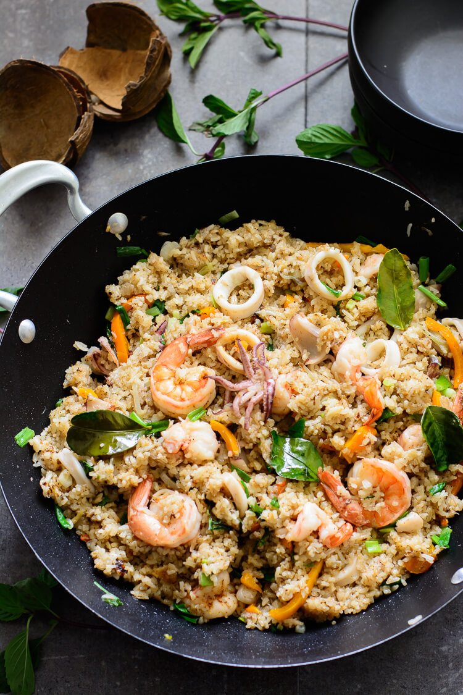

Sea food rice
Arroz de Marisco is a seafood classic from Portuguese Cuisine.
. It usually comprises
of a variety of shellfish, peppers, tomatoes, fresh herbs, and short-grain rice making an indulgent and delicious dish. For those that are not convinced yet, it was also
selected in 2011 as one of the 7 Wonders of Portuguese Gastronomy.
This seafood rice recipe is loaded with flavor. It combines perfectly
seasoned rice, vegetables, and shrimp to create a simple yet delicious
fried rice recipe everyone will love. And the best part is that it's
so easy to make. In fact,
you can get this super delicious seafood recipe ready in well under 30 minutes!

Ingredients
- 500g medium sized fresh prawn – gambas
- 250g clams
- 400g mussels
- 1 medium sized red pepper
- 2 large onions – diced
- 4 garlic cloves
- 400g Carolino rice
- Olive oil
- 1tbsp butter
- Salt
- Fresh coriander
- Dry white wine
So where can u find this cusine?
Despite its creation being associated to a beach in Central
Portugal – Praia de Vieira de Leiria, it is widely available
in many restaurants across coastal Portugal. In the UK you
can find this brilliant recipe in a local portuguese restaurant!
I'm such you won't regret it!